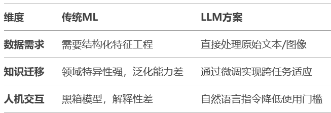

近年来，金属-有机框架（MOF）和共价有机框架（COF）的研究呈现爆发式增长，剑桥结构数据库中MOF结构已突破10万种。面对海量的文献数据和复杂的合成条件优化，传统研究方法面临巨大挑战。最新研究表明，大型语言模型（LLM）可为框架化学研究提供三大关键技术支撑：自动化文献数据提取、分子结构智能生成和合成条件优化建议。通过针对性的提示工程和模型微调，这些AI工具能有效辅助化学家开展工作，提高研究效率。这一技术方向正在快速发展，有望成为框架化学研究的新范式。
框架化学的数字化革命
框架化学通过金属节点与有机配体的精确组装，创造了MOF、COF等明星材料。MOF/COF相关原始文章和综述数量在Web of Science上呈指数级增长，剑桥结构数据库中MOF结构的沉积量也呈现类似趋势。但传统"合成-表征-测试"的研究模式，在指数级增长的设计空间前显得力不从心。
这种危机在合成筛选中尤为突出：一个典型MOF的合成条件涉及金属盐种类、配体取代基、溶剂比例等超过20个变量，传统试错法需要数百次实验。而人类化学家平均每年只能系统研究3-5种新框架——这相当于在撒哈拉沙漠寻找特定沙粒。
这一海量的科学文献超出了人工探索的限度，凸显了像大型语言模型这样的工具自动化总结和数据提取的必要性。论文中提到：传统上，从科学文献中整理数据需要密集的人工标注或编程专业知识——包括基于规则的系统和机器学习模型——以提取文本中稀疏分布的信息，如合成协议、孔隙率、拓扑结构、分解温度和水稳定性。
LLMs在框架化学中的三大应用领域
- 数据挖掘：从海量文献中提取知识
在框架化学研究中，理解合成-结构-性能关系至关重要。LLMs提供了一种可扩展的方式来加速这一过程，通过自动化文献选择、语义分析、命名实体识别和后处理步骤。这种方法的独特之处在于，每个步骤都可以使用自然语言提示工程在各种化学词汇中"编程"，这使得该方法对框架化学家特别友好和易于使用。
以MOF合成参数提取为例，工作流程从定义研究范围开始，确定导致MOF结晶的合成条件列表，包括金属、连接体、溶剂、反应时间和温度等变量。然后使用LLM选择相关论文，通过检查论文库中的标题和摘要来识别用户定义的标准（例如，"MOF合成"、"实验性"、"非后合成修饰"、"非综述论文"）。一旦确定了相关论文，将每篇论文输入模型以提取用户需要的特定参数，输出格式（如表格、JSON字典、分类标签）在提示中指定。
值得注意的是，查询语言的灵活性使这一过程可以轻松适应不同的研究需求，降低了数据科学经验较少的框架化学家进行数据挖掘的障碍。例如，通过将提示中的"合成参数"替换为"BET比表面积"，关注点就从合成条件转移到了孔隙率数据提取。
- 设计框架框架：从分子生成到性能预测
LLMs作为生成式AI，能够简化框架框架的设计过程。研究人员可以利用预训练的LLMs并针对特定任务对其进行微调，而不是从头构建生成式AI模型（这需要大量资源）。
2023年，该研究团队展示了使用LLMs挖掘MOF合成参数数据的方法，其中包括数百种有机连接体。在此基础上，他们探索了这一MOF连接体数据集是否能帮助LLM学习如何编辑有机连接体—如官能团修饰、分子长度变化和杂原子引入—并生成新的有效分子。换句话说，对于给定的"母体"连接体（A0），他们有兴趣训练LLM生成一系列变体（A1、A2、A3等）。这一任务要求LLM理解IUPAC名称或SMILES字符串的语法，并确保生成的分子结构在化学上有效（即不违反键合规则）。
该数据集包含3,943对示例（从A0到A1，A0到A2，B0到B1等），用于指导GPT-3.5-Turbo学习其中嵌入的化学信息和规则。经过微调的模型能够以更高的准确率（>84.8%，相比基础模型的10.2%）生成编辑后MOF连接体的SMILES字符串或IUPAC名称。这一过程多次迭代，进行多个修改，创建了MOF连接体库。有前途的候选物可以通过手动识别或基于其商业可行性或其他ML模型确定的合成可行性进行计算选择，从而成功发现了新的吸水MOFs。
- 合成探索和自动化：从人工尝试到智能实验室
获得单晶是框架化学合成领域的关键目标，但晶体生长常常是一项挑战，需要时间和经验。而且，这种经验知识通常难以在类似的等网络化合物之间转移。即使构建块组成略有变化（如从-H到-CH3），最佳结晶条件也可能发生变化。
LLMs可以通过三种关键方式增强框架材料合成：提供实验室指导、预测合成结果和整合自动化技术进行合成优化。
在提供实验室指导方面，尽管LLMs可以指导实验活动、规划合成并生成假设，但人类可以实验验证这些输出并向LLM反馈以生成下一步指导。这种迭代过程被证明可以通过多轮人类-AI协作发现一系列等网络铝MOFs。在提示中引入了一个记忆存储部分，要求LLM总结迄今为止协作的进展并添加最新活动。这个历史记录随时间积累，记录了多次迭代中的成功和失败，使LLM能够避免重复建议并动态调整其对下一步的指导。
技术深度分析：为什么LLMs能改变框架化学研究
作者选择LLM而非传统机器学习，源于三个深层考量：

这种选择在合成预测中体现得淋漓尽致：当要求预测"UiO-66在潮湿环境中的稳定性"时，LLM不仅能检索文献中的水吸附数据，还能调用DFT计算模块预测Zr-O键的解离能（ΔE=2.3 eV），最后用化学动力学模型估算寿命——这种多工具协同超越了单一算法的局限。
框架化学研究的核心挑战之一是从海量文献中提取有用信息。传统方法需要研究人员手动阅读大量论文，耗时费力且难以扩展。LLMs的优势在于其自然语言处理能力，可以理解化学文本的语义和上下文，无需专门为每种数据类型开发新的提取工具。
该技术体系的独特价值体现在其可解释的工作流设计上。与传统黑箱AI不同，系统会输出化学逻辑明确的决策链，例如在评估连接体取代时自动关联CSD数据库中的晶胞参数变化规律。这种透明化推理机制，配合包含2.1万组失败实验的"Dark Reactions"数据库，使化学家能够理解并验证AI的决策过程。实验数据显示，该体系将MOF从设计到表征的周期从传统方法的6个月缩短至2周，设计-合成匹配度τ达0.73，展现了人工智能与专家经验协同的强大潜力。
提示工程的精妙之处
研究者采用提示工程而非直接编写代码，原因在于其可访问性和灵活性。通过自然语言指令，化学家无需深厚的编程背景就能"教导"LLM执行复杂任务。例如，当提取MOF合成参数时，提示中包含三个关键原则：
- 最小化幻觉：通过明确指示LLM使用提供的文本回答问题，不知道时回答"N/A"
- 提供详细指令：通过指定精确参数（如"金属-连接体比例、反应温度、反应时间"）而非模糊术语减少歧义
- 请求结构化输出：在提示中指定所需输出格式，以确保更一致的结果并便于后处理
这种方法的巧妙之处在于，它将化学专业知识转化为自然语言指令，使LLM能够识别和处理专业术语与概念，同时保持足够的灵活性以适应不同研究需求。
增强策略的双重价值
数据增强和工具增强的结合为LLM提供了超越其训练限制的能力。检索增强生成（RAG）允许LLM访问最新可靠的信息和知识，从而生成更准确的答案。例如，当化学家询问"MOF-321的合成条件是什么？"时，模型可以从文献数据库中检索相关信息并整合到回答中。
而工具增强则允许LLM执行特定任务或计算，如计算化合物的分子量或预测其性能。这种方法的创新之处在于LLM可以理解什么工具存在、何时使用它们以及如何通过推理正确配置输入来执行这些模型。
微调的差异化优势
微调LLM涉及在特定数据集上重新训练基础模型，以定制其在特定任务或领域中的表现。与提示工程和增强不同，微调调整了模型的权重参数，产生了新的模型实例。
研究者选择微调的原因在于，它能将更多数据和示例纳入模型，远超单个提示所能容纳的范围，并且使模型能够从数据中学习，而不仅仅是访问它。例如，通过对LLM进行指令调整，可以帮助其更好地理解SMILES字符串或有机连接体的缩写。这种方法创造了一个领域专用的模型，能够以更高的准确率生成化学有效的分子结构。
关键技术比较
展望未来：挑战与机遇并存
尽管前景光明，AI赋能的框架化学仍面临三重考验：
- 数据幽灵：文献中90%的成功案例导致模型存在"幸存者偏差"，急需构建含失败实验的"黑暗数据集"
- 能耗悖论：训练单个LLM的碳足迹相当于300辆汽车的年排放量（Strubell et al., 2019）
- 伦理迷雾：AI设计材料的专利归属尚无国际共识
最后的话
正如论文作者所警示："LLM不是替代化学家的魔法，而是扩展人类认知边界的显微镜。"在伯克利实验室的墙上，刻着MOF之父Omar Yaghi的箴言："材料的灵魂在于其孔隙。"或许在不远的未来，这句话将被赋予新的内涵——当AI帮助我们窥见那些隐藏在近乎无限设计空间中的分子精灵时，人类与机器的协作，正在重写材料探索的史诗。